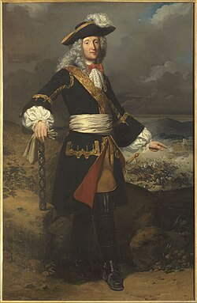

Princess Mathilde
Princess Mathilde was a prominent figure in the 19th century, known for her salon and cultural contributions.
Saint-Gratien owes its name to a young shepherd who was martyred
in the 4th century and canonized under the reign of Dagobert I in
628.
The site of his martyrdom then took the name Saint-Gratien, and
the monks of the Saint-Denis abbey built an oratory there in his
memory.
For centuries, Saint-Gratien remained a modest village north of
Paris. A turning point came in the 17th century, when Nicolas de
Catinat, later a Marshal of France, became lord of Saint-Gratien
and settled in the castle built by his great-grandfather.
After his death in 1712, the town later adopted his coat of arms
in July 1994, in tribute to this founding figure.
In the 19th century, Princess Mathilde Bonaparte profoundly
transformed village life by establishing her estate and literary
salon there, attracting writers and artists. Her generosity also
made the construction of the current church possible.
In 1850, Saint-Gratien gave up part of its territory to create the
neighboring town of Enghien-les-Bains, losing the lake that now
bears that city's name.
Attached to the Seine-et-Oise department until 1964, the town was
integrated into the new Val-d'Oise department during the
reorganization of the Paris region. Saint-Gratien gradually became
a residential town in the northwestern outskirts of Paris, with
dense suburban housing.
Today, Saint-Gratien has around 20,900 inhabitants. Its residents
are the people of Saint-Gratien. A member of the Plaine Vallée
urban community, the town continues its urban transformation while
preserving traces of its past: the tomb of Marshal de Catinat and
Catinat Castle, a municipal property, still bear witness to this
history.
Princess Mathilde was a prominent figure in the 19th century, known for her salon and cultural contributions.

Nicolas de Catinat was a French military leader and politician, known for his service in the French army and his role in the development of Saint-Gratien.